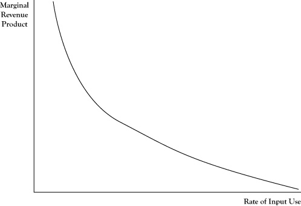

In Chapter 2 "Key Measures and Relationships", we discussed the principle for profit maximization stating that, absent constraints on production, the optimal output levels for the goods and services occur when marginal revenue equals marginal cost. This principle can be applied in determining the optimal level of any production resource input using the concepts of marginal product and marginal revenue product.
The marginal productThe amount of additional output that would be generated if one more unit of an input were obtained and processed. of a production input is the amount of additional output that would be created if one more unit of the input were obtained and processed. For example, if an accounting firm sells accountant time as a service and each hired accountant is typically billed to clients 1500 hours per year, this quantity would be the marginal product of hiring an additional accountant.
The marginal revenue productThe additional revenue created from one additional unit of an input; the marginal product of the input times the marginal revenue of the output. of a production input is the marginal revenue created from the marginal product resulting from one additional unit of the input. The marginal revenue product would be the result of multiplying the marginal product of the input times the marginal revenue of the output. For the example in the previous paragraph, suppose that at the current output levels, the marginal revenue from an additional billed hour of accountant service is $100. The marginal revenue product of an additional accountant would be 1500 times $100, or $150,000.
In determining if a firm is using the optimal level on an input If the marginal revenue product exceeds the marginal input cost, a firm can improve profitability by increasing the use of the input; if the marginal cost of the input exceeds the marginal revenue product, profit can be improved by decreasing use of the input., the marginal revenue product for an additional unit of input can be compared to the marginal cost of a unit of the input. If the marginal revenue product exceeds the marginal input cost, the firm can improve profitability by increasing the use of that input and the resulting increase in output. If the marginal cost of the input exceeds the marginal revenue product, profit will improve by decreasing the use of that input and the corresponding decrease in output. At the optimal level, the marginal revenue product and marginal cost of the input would be equal.
Suppose the marginal cost to hire an additional accountant in the previous example was $120,000. The firm would improve its profit by $30,000 by hiring one more accountant.
As noted earlier in the discussion of marginal revenue, the marginal revenue will change as output is increased, usually declining as output levels increase. Correspondingly, the marginal revenue product will generally decrease as the input and corresponding output continue to be increased. This phenomenon is called the law of diminishing marginal returns to an input Marginal revenue product will decrease as an input and corresponding output continue to be increased.. So, for the accounting firm, although they may realize an additional $30,000 in profit by hiring one more accountant, that does not imply they would realize $3,000,000 more in profits by hiring 100 more accountants.
If the marginal revenue product is measured at several possible input levels and graphed, the pattern suggests a relationship between quantity of input and marginal revenue product, as shown in Figure 4.3 "Typical Pattern of a Derived Demand Curve Relating the Marginal Revenue Product to Quantity of Input Employed in Production". Due to the law of diminishing marginal returns, this relationship will generally be negative. Thus the relationship looks much like the demand curve corresponding to output levels. In fact, this relationship is a transformation of the firm’s demand curve, expressed in terms of the equivalent marginal revenue product relative to number of units of input used. Due to the connection to the demand curve for output, the relationship depicted in Figure 4.3 "Typical Pattern of a Derived Demand Curve Relating the Marginal Revenue Product to Quantity of Input Employed in Production" is called a derived demand curveA negative relationship between quantity of input and marginal revenue product that is a transformation of a firm's demand curve..
Figure 4.3 Typical Pattern of a Derived Demand Curve Relating the Marginal Revenue Product to Quantity of Input Employed in Production
One difficulty in comparing marginal revenue product to the marginal cost of an input is that the mere increase in any single input is usually not enough in itself to create more units of output. For example, simply acquiring more bicycle frames will not result in the ability to make more bicycles, unless the manufacturer acquires more wheels, tires, brakes, seats, and such to turn those frames into bicycles. In cases like this, sometimes the principle needs to be applied to a fixed mix of inputs rather than a single input.
For the accounting firm in the earlier example, the cost to acquire an additional accountant is not merely the salary he is paid. The firm will pay for benefits like retirement contribution and health care for the new employee. Further, additional inputs in the form of an office, computer, secretarial support, and such will be incurred. So the fact that the marginal revenue product of an accountant is $150,000 does not mean that the firm would benefit if the accountant were hired at any salary less than $150,000. Rather, it would profit if the additional cost of salary, benefits, office expense, secretarial support, and so on is less than $150,000.